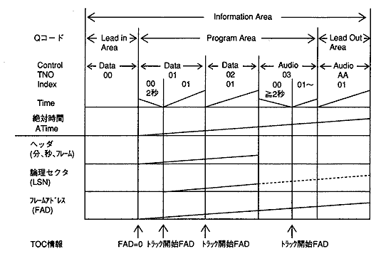
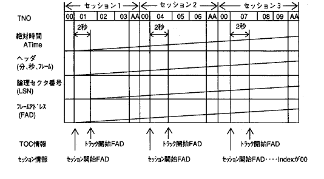

★PROGRAMMER'S GUIDE
★CD通信I/F(CDパート)
★PROGRAMMER'S GUIDE
★CD通信I/F(CDパート)
用 語 | 意 味 |
|---|---|
セクタ | CDブロックで扱う基本的なデータの単位。（2352バイト固定） |
ストリーム | セクタのヘッダとサブヘッダで区別される、論理的に連続したデータの流れ。 |
CDバッファ | セクタデータを格納するCDブロック内のバッファ。 |
CDバッファサイズ | CDバッファのセクタ単位の大きさ。 |
バッファ区画 | CDバッファを複数の論理的な区画に区分けしたもの。 |
バッファ区画サイズ | バッファ区画のセクタ単位の大きさ。 |
セクタ位置 | バッファ区画内のセクタの位置。（セクタ単位の位置） |
絞り | 設定した条件によって、ストリームを分離する論理的な素子。 |
セレクタ | 絞りとバッファ区画から構成され、ストリームを選択する論理的な素子。 |
デバイス | CD-ROMやMPEGなど、ストリームを発生・吸収する論理的な装置。上記回路 |
コネクタ | 絞り、バッファ区画、デバイスを接続するための端子。 |
フレームアドレス（FAD） | CD上の絶対時間00:00:00を0として、フレーム単位に連続的に番号を付けたもの。 |
論理セクタ番号（LSN） | CD上の絶対時間00:02:00を0として、セクタ（フレーム）単位に連続的に番号を |
ファイル情報 | ファイルをアクセスするために保持している、ディレクトリレコード情報。 |
ファイル識別子 | ファイルを識別するためのディレクトリ内の順序番号。 |
記号・略号 | 意 味 | 説 明 |
|---|---|---|
Adr | address | アドレス |
BCD | binary coded decimal | 2進化10進数 |
bn,bufno | buffer no. | バッファ区画番号 |
bufnum | buffer numbers | 全バッファ区画数 |
CI | coding information | コーディング情報 |
CN | channel no. | チャンネル番号 |
Ctrl | control | コントロール |
dst | destination | 複写／移動先 |
fad | frame address | フレームアドレス |
fasnum | fad sector numbers | フレームアドレスセクタ数 |
fid | file identifier | ファイル識別子 |
fln,filtno | filter no. | 絞り番号 |
FN | file no. | ファイル番号 |
LSB | least significant bit | 最下位ビット |
MSB | most significant bit | 最上位ビット |
ply | play parameter | 再生パラメータ |
pos | position parameter | 位置パラメータ |
SM | submode | サブモード |
sct | sector | セクタ |
ses | session information | セッション情報 |
sesno | session no. | セッション番号 |
snum | sector numbers | セクタ数（区画のセクタ範囲指定時） |
sp,spos | sector position | セクタ位置（区画のセクタ範囲指定時） |
src | source | 複写／移動先 |
stat | CD status information | CDステータス情報 |
subh | subheader condition | 絞りに対するサブヘッダ条件 |
TNO | track no. | トラック番号（曲番） |
toc | TOC information | TOC情報 |
txwnum | transfer word numbers | 転送ワード数（ワード単位のデータ転送サイズ） |
X,idx | index | インデックス番号 |
word | word | ワード。2バイト（16ビット）の長さの単位。 |
図2.1 トラックの構造とアクセスキーの関係

図2.2 マルチセッションのレイアウト

★PROGRAMMER'S GUIDE
★CD通信I/F(CDパート)